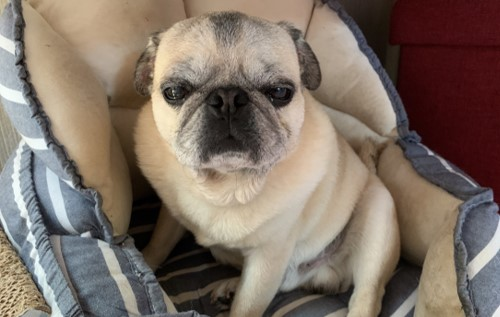

ペット
現在飼っているのは犬一匹と猫二匹です。今まで飼った犬猫を紹介します。
犬
ごまたろう
| 犬種 | パグ |
|---|---|
| 性別 | オス |
| 年齢 | １０才 |
| 誕生日 | 8月1日 |
１０年ほど前に飼い始めました。
最近はおじいちゃんになってきてよく寝るようになりました。
猫
もみじろう
| 毛色 | 黒色 |
|---|---|
| 性別 | オス |
| 年齢 | １才 |
| 誕生日 | １０月２０日 |
１年半ほど前に姉が学校から拾ってきた猫です。
性格はおとなしく、とても優しい子です。
つむぎ

| 毛色 | 三毛 |
|---|---|
| 性別 | メス |
| 年齢 | 約１８才 |
| 命日 | １０月２０日 |
一年前に姉が家の近所から拾ってきたおばあちゃん猫です。
かまって欲しくてよく鳴きます。
あめさぶろう
| 毛色 | キジ白 |
|---|---|
| 性別 | オス |
| 年齢 | ８か月 |
| 誕生日 | １０月１日 |
半年前に姉が学校から拾ってきた猫です。
家では元気に遊びまわるけど人見知りで病院は苦手です。